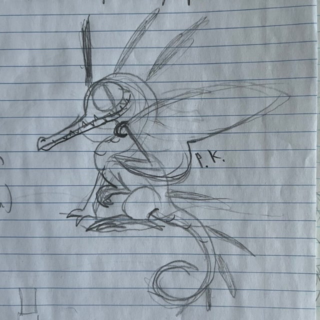

PIXIE DRAGON
Perhaps the most unusual of all the dragons, the Pixie Dragon is a fine example of the oddness of Australian wildlife. The last surviving member of the forest-dragon clade, it's arboreal habits, colourful scales, and nocturnal schedule stand in direct contrast to the lifestyles of other large reptiles.
Chittering away in it's treetop home during the day, the Pixie clambers over branches with it's claws and prehensile tail, keeping a watchful eye over it's flock. When dusk falls, it takes to the skies, fluttering after moths and birds in a discordant, excitable fashion. A perfectly-adapted night-time hunter, it has no difficulty finding prey thanks to it's huge eyes and agile build; some scientists say it may even be capable of echolocation.
IDENTIFICATION
| Habitat: | Forested bush across Australia. |
|---|---|
| Size: | The smallest dragon species; around the size of a domestic housecat. Specifics TBD. |
| ID: | Unique semi-bipedal stance, comparable to that of a monkey or koala-bear. Thin jaws lined with small teeth, ending in a hooked beak. Huge, gecko-like eyes, set in a round head. Wings are distinctly 'insectoid' in shape, with no extra fingers. Lacks horns entirely. Long, quill-like back spines are black with an iridescent sheen. Prehensile tail used to grip branches while climbing. |
| Colour: | Dusty-pink or pale-blue scales, paper-yellow wings. Spines are iridescent-black. |
| Habits: | Nocturnal in nature; spends the daytime resting in trees or on telephone-posts. Awakens at dusk to hunt insects and small birds. Highly social; can be seen resting in groups of up to thirty individuals. Distinct chittering calls. Energetic, fluttering flight unique amongst dragons, as are most of the pixie dragon's features. |
| Diet: | Various nocturnal insects, such as moths, cicadas, grasshoppers etc. Small birds may also be taken. Known to scavenge from larger carrion when the oppurtunity arises. |
| Nesting: | Males fly high in the air before rapidly diving, a courting act similar to that of certain hummingbirds. Female lays two-to-three eggs in a woven nest made from twigs, mud, and grasses, lined with animal hair or softer plants, and located upon a tree branch. Eggs are pale-blue in colour and hatch after four weeks. Young stay within their tree until they are able to fly, and are raised by both parents. |
Similar Species:
Unique range and extremely unusual anatomy make the Pixie Dragon a completely unmistakable species.
NOTES
The Pixie Dragon started as a simple doodle of a gecko-dragon I immediately fell in love with. I wanted my fictional dragon universe to have some kind of weirdo Australian species and I just knew these guys had to be it.
Their iridescent spines are an opaque reference to the Australian aboriginal mythological figure of the Rainbow Serpent. The species was named both for it's cutesy appearance and for the garage-rock band the Pixies, who I adore.
The Pixie Dragon takes biological inspiration from the arboreal, nocturnal lifestyles of possums and geckos, and the insect-hunting methods of nighthawks. The popular idea of the Australian continent as an isolated place known for it's wholly unique wildlife was another major inspiration.
For those curious about fictional dragon taxonomy, the forest-dragons are a group consisting of mostly-extinct species known for their smaller size and.. well.. extinct-ness. The Pixies are the only living member of the clade, though their relatives were once spread throughout southeast Asia.